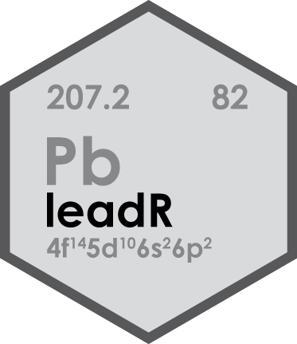
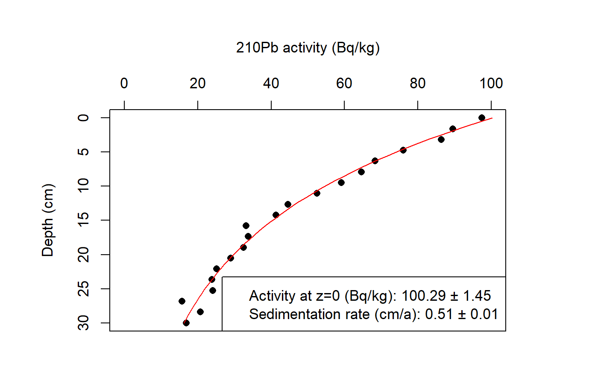

gammaSpec 
Find a full documentation of the package on the project page
Installation
The ‘leadR’ package is not available on the official CRAN servers.
However, the latest development builds can directly be installed from GitHub. Simply run the following from an R console
Features
Example of the ‘Constant Flux Constant Sedimentation Rate’ (CF:CS) model ouput:
# Load example data (synthetic)
data(Pb)
str(Pb)
#> 'data.frame': 20 obs. of 2 variables:
#> $ depth : num 0 1.58 3.16 4.74 6.32 ...
#> $ activity: num 97.5 89.6 86.5 76 68.3 ...
# Apply the model
results <- calc_SedimentationRate(x = Pb,
reverse = TRUE,
fix_a0 = FALSE,
verbose = TRUE)
#> Equation: activity ~ 100.288 * exp((0.03114/0.512) * depth)
#> Sedimentation rate: 0.512 ± 0.013 cm/a